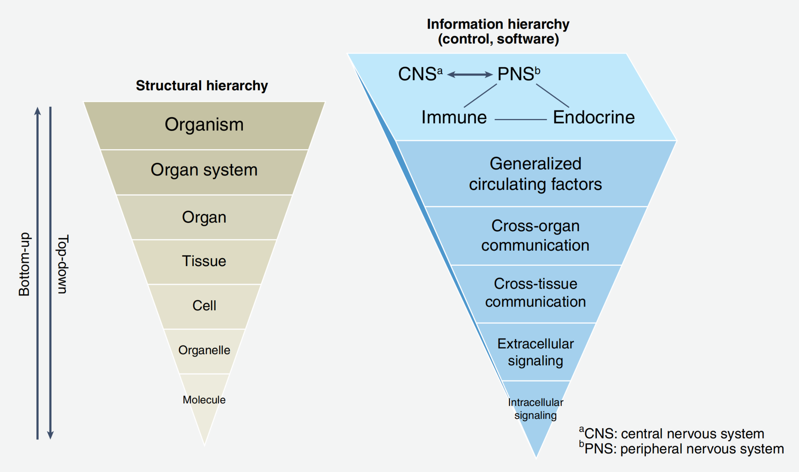
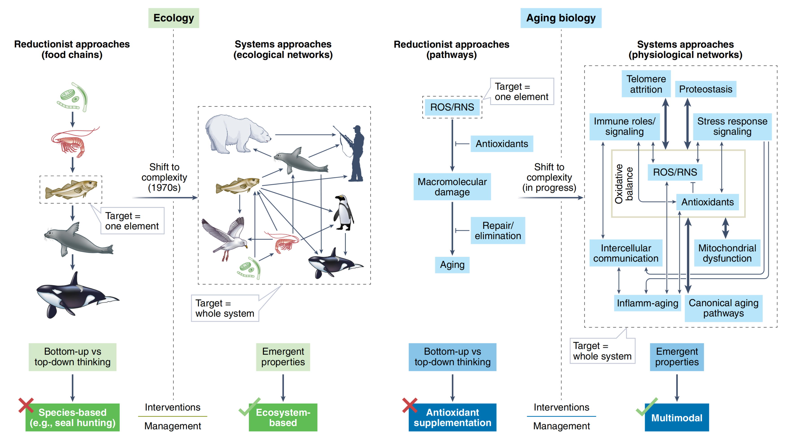
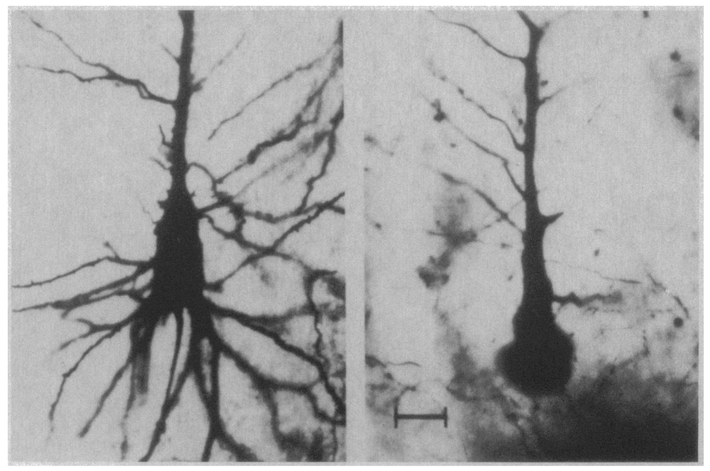
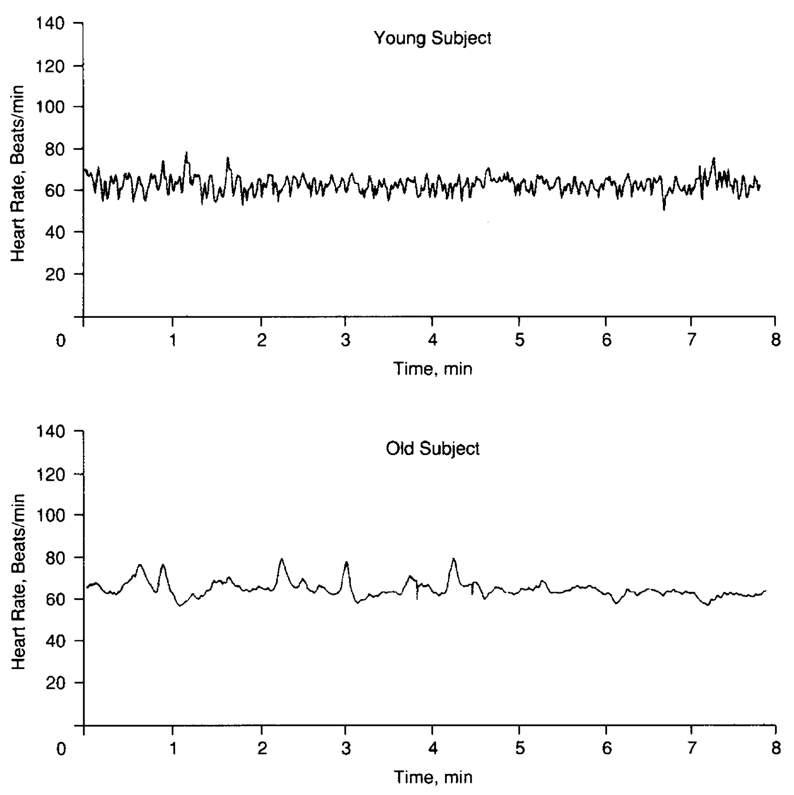
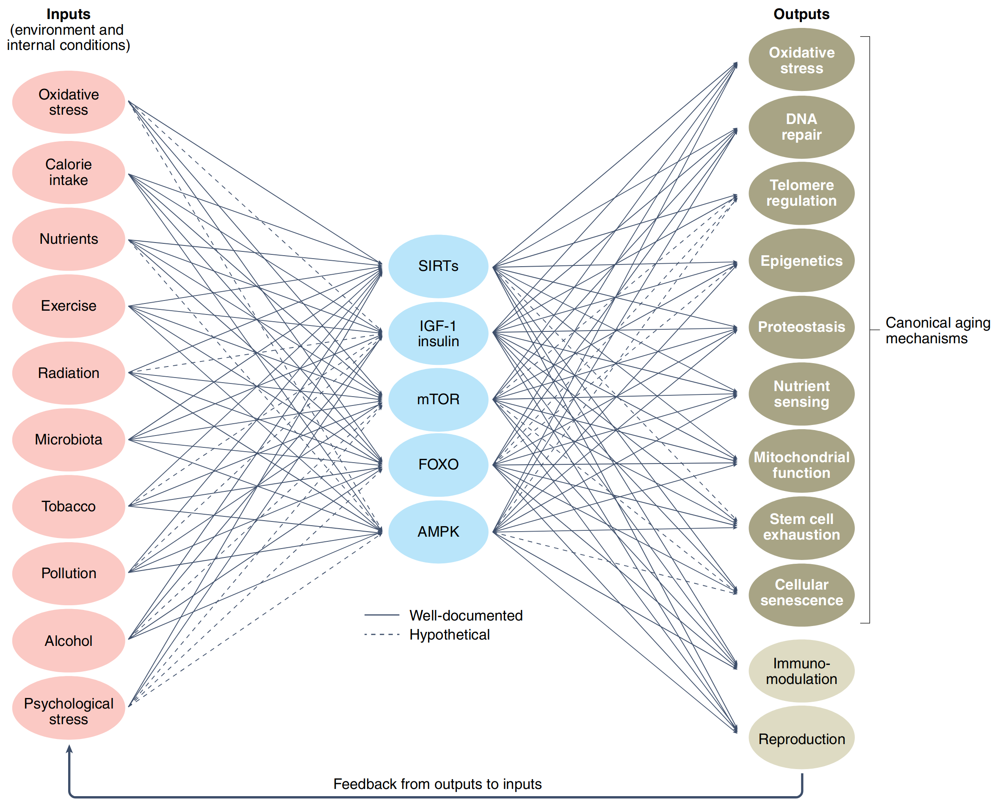
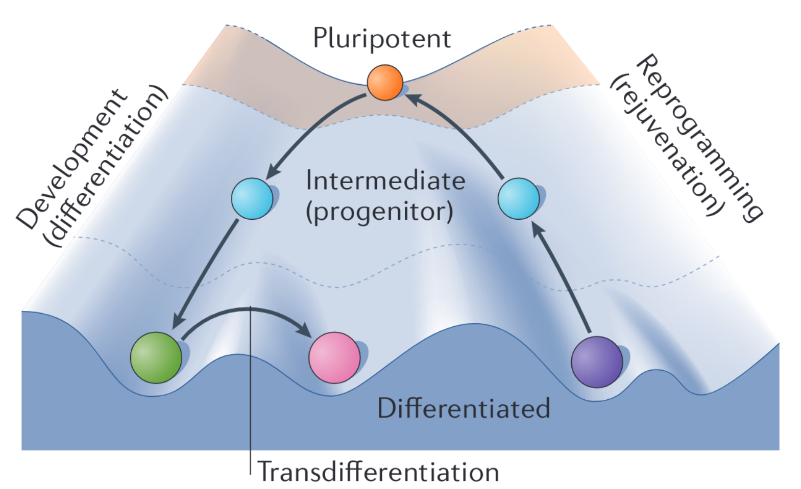
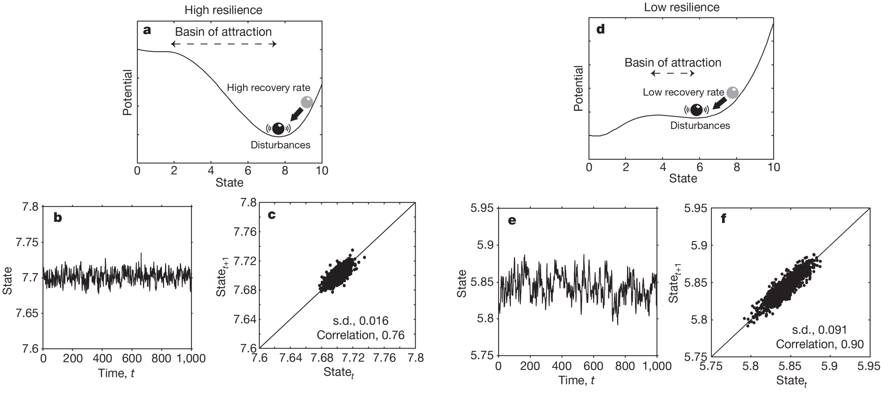
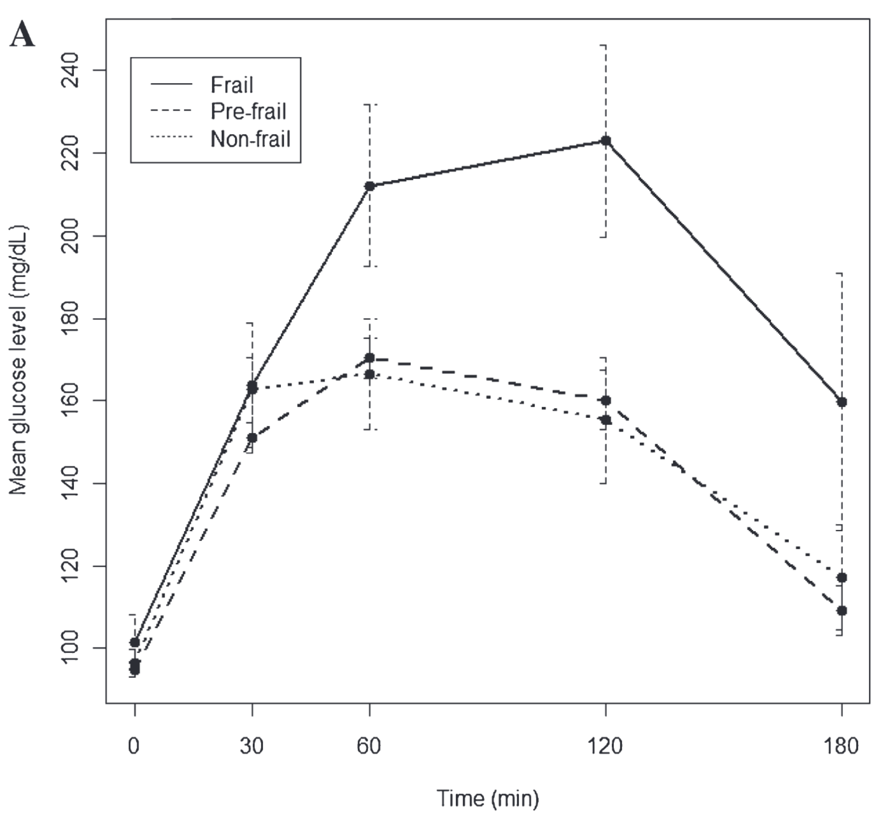

7. Complex systems approach#
Nothing in aging biology makes sense except in the light of dynamic equilibrium.
Aging biology today is not engineering but science at its early stage. This expresses that we frequently cannot observe direct causal and numerically tractable relationships (as in physics) but we are doomed to see mostly associations and patterns. However, it may also be a good starting point for dynamic modeling. Large volumes of data and the absence of an organizing paradigm are major challenges of modern aging biology. Complex systems approaches provide some computational instruments and necessary vocabulary for simplification, understanding, and identification of the essential features of data. Throughout this chapter, you will come across many new words: system, complexity, networks, emergence, resilience, and critical transitions. They form an important minimal vocabulary necessary for developing complex systems intuition which (we believe) can be greatly useful for any researcher. We organize them into subsections and uncover them one by one. This chapter partly relies on the recent work of [Cohen et al., 2022] where a corresponding philosophical framework, as well as important computational examples, was proposed.
7.1. Complex systems perspective on aging#
Before the consideration of complex systems, we should understand what we had before. The two typical approaches in sciences are Top-Down and Bottom-Up. If the object of study is a human organism, then the Top-Down approach asks the question of which large-scale observations are associated with small-scale ones. For example, a patient’s state change is associated with a change in the level of some protein. And vice versa, the Bottom-Up approach asks whether a large-scale patient’s state changes after perturbation of some protein level. Moving Bottom-Up generates something we call metabolic pathways, gene ontologies, etc. - i.e. combining small-scale entities into new higher-scale entities. In turn, moving Top-Down we can differentiate new entities such as organs, tissues, cells, organelles, and nuclei at a smaller scale (Fig. 7.1). You might have noticed that science greatly advanced by applying only these two approaches. However, an encounter with living systems forces us to develop a new methodology. The problem with these two approaches is that they do not take into account interactions between feedback/feedforward loops at too different scales trying to provide a mechanistic explanation of processes in a level-by-level manner. They provide theories like A causes B and B causes C whilst in real complex systems we observe behaviors like A causes B, B causes A, B causes C and C causes A and B. Do you agree that this no longer presumes a one-dimensional schematic explanation of the mechanism of action? Such an abundance of causal relationships forces us to use the concept of networks for building a more correct body of knowledge.
Note
For example, depending on their cellular context, calpains may either activate caspase 3, leading to apoptosis, or degrade caspase 3, preventing apoptosis [Łopatniuk and Witkowski, 2011].


Fig. 7.1 Example of Top-Down and Bottom-Up organization of knowledge.#
Cohen and colleagues [Cohen et al., 2022] provide a great example of such a switch to the complexity that happened in ecological sciences recently (Fig. 7.2). You can see that a previously popular food chains theory was changed by a system approach where interactions between species form a complex network where it is not obvious how the system will respond to removing a particular species. Currently, we observe a similar transformation in the aging domain. Two great examples (and already classical) of such a transformation are the Hallmarks of aging [López-Otín et al., 2013] and Pillars of aging [Kennedy et al., 2014] papers trying to highlight a set of key entities related to aging and connecting them into a network of interacting elements. Thinking in a complex systems paradigm challenges a traditional perspective that single-molecule interventions will be found that substantially slow aging (indeed many researchers are pursuing such approaches). Instead, we should focus on a combinatorial approach requiring, however, a robust model of the system under treatment.


Fig. 7.2 Shift to complex systems approaches in ecology and aging biology.#
Note
Top-Down approach – methodology of connecting large-scale observations with smaller-scale ones by differentiation of a large object into smaller entities.
Bottom-Up approach – methodology of connecting smaller-scale observations with larger-scale ones by a combination of small objects into larger entities.
Examples of complex systems include ecosystems, economies, traffic systems, power systems, etc. It is a kind of magic that all of them, nevertheless, have common properties or hallmarks. Core hallmarks of complex systems include:
networks of interacting elements (for example, interactions among molecules in key aging pathways such as AMP-activated protein kinase (AMPK), mechanistic target of rapamycin (mTOR), sirtuins, insulin-like growth factor);
feedback/feedforward loops (for example, adaptive loops such as blood pressure regulation);
multiscale or modular hierarchical structure (for example, organelles nested in cells nested within tissues nested within organs);
emergent properties, which are properties of a system that cannot be directly or additively inferred by examining its component parts (for example, cognitive decline cannot be understood simply as the sum of multiple aging cells).
Note
Cohen et al. [Cohen et al., 2022] also mention nonlinear dynamics as a hallmark of complex systems. But we do not see enough arguments to include this point as a hallmark. In our view, complex systems can also have linear dynamics described by a set of linear ordinary differential equations for instance.
Before we proceed, let’s introduce one important rule which helps you to differentiate “bad” complex systems propositions from “good” ones. Any abstract philosophical concepts you will discover about complex systems (such as complexity or resilience) in the future must be reinforced with a concrete embodiment in mathematical or biological terms.
7.2. Aging as loss of Complexity#
What can be one of the most common characteristics of aging? Can we express the plethora of our observations of an aging organism by one cumulative term? It turns out, we can consider the topological characteristics of complex living systems comparing them at different time moments (at young and old ages). The complexity was proposed as such a characteristic in [Lipsitz and Goldberger, 1992] where the authors suggested that aging is associated with “loss of complexity”. It is tough to define “complexity” explicitly and the authors do not give such a definition. Instead, they measure complexity with some mathematical instruments relying on an intuitive understanding of this concept. One example is depicted in Fig. 7.3, where you can see a comparison between young (left) and old (right) neurons. If we evaluate fractal dimensions of the left and right structures we will spot a decrease in the measure. Intuitively it’s correct: the left structure looks more complex than the right counterpart, at least, because the left arbor has more branches.


Fig. 7.3 Age-related loss of fractal structure in the dendritic arbor of the giant pyramidal Betz cell of the motor cortex.#
But maybe another example from the same paper will be more intelligible. Look at Fig. 7.4, where you can see the heart rate dynamics of young (top) and old (bottom) individuals. We see that the top and bottom signals are statistically different. From the spectral theory point of view, we could say that the top signal has more high frequencies in its spectrum. This means that the heart rate signal tends to lose high-frequency components as we age. Another way to express this behavior of the signal is to measure its Shannon entropy [Shannon, 1948]. Since entropy by definition is a measure of the amount of information needed to predict the future state of the system, the higher the entropy a signal has, the higher its complexity is. The fact is that the top signal has higher entropy than the lower one, so, within the aforementioned terms, we again observe a loss of complexity with aging. The observation of complexity decreasing can inspire us to take the next step in studying the phenomenon. For example, in [Lipsitz and Goldberger, 1992] it was mentioned that the age-related decline in heart rate variability is likely due to dropout of sinus node cells, altered \(\beta\)-adrenoceptor responsiveness, and reduction in parasympathetic tone.


Fig. 7.4 Heart rate time series for a 22-year-old female subject (top panel) and a 73-year-old male subject (bottom panel).#
It turns out that the idea to use entropy as a measure of complexity creates a contradiction. One of the hallmarks of aging, genomic instability, was shown to increase entropy with aging. Somatic mutations and spontaneous double-strand breaks (DSB) contribute to the general “loss of genomic information” (and, therefore, entropy increase) that is associated with aging. Moreover, the experiments with mice genetically modified for induction of DSB show patterns of accelerated aging [Hayano et al., 2019], [Yang et al., 2019]. Does it mean that aging is not coupled with a loss of complexity? Yes and no; it is rather coupled with the poor mathematical counterpart of the complexity concept, namely entropy.
Note
But we can also imagine another explanation. The loss of information - increase in complexity - on the level of the genome leads to degradation in information transition to higher levels of system organization which manifests as loss of complexity. We could even speculate that aging is a loss of the ability for information transition - but we are not ready to provide enough arguments for this view.
Overall, complexity looks like a useful term to make things simpler. Its intuitive accessibility hints at mathematical frameworks for its measurement and highlights biological phenomena for its interpretation. Thinking about system complexity helps us to extract the most general properties of the object of study.
Note
Some additional definitions of complexity:
In general, the number of systems and links between them describes a model.
In dynamic systems, statistical complexity measures the size of the minimum program able to statistically reproduce the patterns (configurations) contained in the data set (sequence) [Crutchfield and Young, 1989].
In information processing, complexity is a measure of the total number of properties transmitted by an object and detected by an observer.
Exercise 1
Look through the table in [Lipsitz and Goldberger, 1992]; link. Choose one “loss of complexity” fact and the corresponding measure from the table. Check out the original study where the loss of complexity was shown. Do you trust the approach suggested in this article? Explain your answer. Try to find more recent research on this topic. If you succeed, add a reference to the report.
7.3. Networks and Biological degeneracy#
Biological systems can be viewed as complex networks of interacting components. This simple idea may seem quite naive until we start to consider the structural properties of these networks. Bow-tie or hourglass structure is a common structural feature found in many biological systems. A bow-tie means that a large number of inputs are converted to a small number of intermediates, which then fan out to generate a large number of outputs (Fig. 7.5) [Cohen et al., 2022] (looks like an autoencoder, doesn’t it?). The important principle lying behind bow-tie formation is called degeneracy [Edelman and Gally, 2001]. In a biological sense, this means the ability of structurally different biological elements (e.g. proteins or metabolites) to perform the same function. Two examples of bow-tie include metabolic networks, where the large range of nutrients consumed by the organism is decomposed into 12 universal precursors (including pyruvate, G6P, AKG, ACCOA) from which the organism builds all of its biomass including carbohydrates, nucleic acids and proteins; the human visual system having \(\sim 10^8\) input photoreceptors in the retina which fans into only about \(\sim 10^6\) ganglion cells whose axons form the optic nerve going to the visual cortex that detects a pattern, color, depth and movement [Friedlander et al., 2015]. In the context of aging biology bow-tie structure expresses the ability of the same pathways to be simultaneously implicated in inflammation, regulating oxidative stress, cancer, reproduction and metabolism (Fig. 7.5). This is a natural consequence of the network’s degeneracy by integrating information from multiple inputs and inflating it to multiple outputs. There is a lot of evidence that degeneracy is an important property of evolving systems and may be even a prerequisite for evolution [Edelman and Gally, 2001].
Note
Bow-tie - network structure assuming that a large number of inputs are converted to a small number of intermediates, which then fan out to generate a large number of outputs. Degeneracy - the ability of structurally different elements to perform the same function. Degeneracy should not be confused with redundancy, which occurs when the same function is performed by identical elements; degeneracy, which involves structurally different elements, may yield the same or different functions depending on the context in which it is expressed [Edelman and Gally, 2001].


Fig. 7.5 Bowtie structure of aging pathways.#
What technical outcomes can we obtain from bow-tie networks? So, the presence of a low-dimensional intermediate layer hints to us that application of dimensionality reduction techniques to biological data is a good decision. It is a fact that many biological entries (e.g. expression level of different genes) are highly correlated with each other [Podolskiy et al., 2015] and a huge dimensionality of inputs can be satisfactorily described by a small number of latent parameters. The latent parameter is a mathematical term describing a low-dimensional linear (or nonlinear) combination of inputs. It is not a big deal to compute a latent parameter according to a model. The more important thing is to give a correct biological interpretation for this parameter. Sometimes latent parameters do not have a clear interpretation but in other cases, a particular latent parameter may catch a clear biological process such as the expression of one of the metabolic precursors mentioned above.
7.4. Emergence and Canalization#
The natural property of human consciousness (and, we need to say, its bias) is a tendency to simplify things by extracting their common pattern. We call a property of a system emergent if we do not see this property in any system component. By discovering emergent properties of the system we cope with its complexity. Classical examples of emergent properties in physical systems are the temperature of a gas and the fluidity of a fluid - in both cases, we do not see such properties in system components (molecules). Revealed emergent properties are especially useful when we can measure them. Biological systems are rich in emergences. Moreover, the concept of Life is a typical example of emergence. One common way that emergence arises in biological systems is through canalization, the tendency of the system to converge toward one of a limited number of discrete states [Cohen et al., 2022]. Once again, if the system can take distinguishable states and these states seem not to be emanating from properties of its components then these states are emergent. An immediate example is acquiring a somatic cell state (or cell fate) through differentiation (Fig. 7.6) from a pluripotent one [Takahashi and Yamanaka, 2016]. It is quite remarkable that despite the huge complexity of a human cell as a system, it has a rather small number of discrete (distinguishable) somatic states that were shown experimentally [Huang et al., 2005].
Note
Emergence - a high-level property of a system, which is not a property of any component of that system. This intractability can be variously interpreted. In weak emergence interpretations, the inexplicability is merely a practical one due to the sheer complexity of the computation required to reach an explanation. In strong emergence interpretations, the emergent property possesses causal autonomy independently of its constituents [O’Byrne and Jerbi, 2022]. Canalization - the tendency of the system to converge toward one of a limited number of discrete states.


Fig. 7.6 Waddington landscape - a metaphor of cell fate transition during differentiation as a ball rolling down from the top of Waddington’s “mountain” (pluripotency) to the bottom of a “valley” (somatic state, e.g. skin, muscle). The opposite process is called reprogramming.#
Canalization and emergence often arise because biological networks can achieve robustness through degeneracy, and so become stable against perturbations - they can maintain dynamic functional stability even when environmental or internal conditions change. This degeneracy, as we said above, means that the same functional result can be achieved by multiple alternative pathways, strategies or system states. For example, during skeletal muscle aging, impaired chaperone-mediated autophagy appears to be compensated by upregulation of macro-autophagy [Cohen et al., 2022]. Other aging-related examples of canalization include cellular senescence which is a relatively discrete state, an alternative to being a healthy cell or to apoptosis. Senescence is thus an attractor state, with many intermediate states within its “attractor basin”. On the level of the organism, we can discover other emergences like frailty - a clinically recognizable state of increased vulnerability resulting from the aging-associated decline in reserve and function across multiple physiologic systems such that the ability to cope with everyday or acute stressors is compromised [Xue, 2011]. Finally, aging is another example of an emergent organism property and as was mentioned above, we highly favor attempts to measure this property.
7.5. Resilience and Critical transitions#
It is time to discuss the dynamic equilibrium mentioned in the epigraph of this chapter. Dynamic equilibrium has two synonyms: resilience and stability - the first is more biological and the latter is more physical. But in the majority of contexts, they mean the ability of a system to return to the equilibrium state preceding a perturbation. The common metaphor for understanding resilience is a ball in the hole model (Fig. 7.7a,d). You can see that a small perturbation can barely knock out the ball from a basin with sharp and high walls (so-called potential barrier) which is associated with the high resilience of the system. On the other hand, low walls do not save the ball from even a small perturbation. The event when a ball leaves its current local minimum state and crosses the boundary of its basin is called critical transition which we discuss below. Resilience can be measured and different measures of resilience (including mathematically tractable) were proposed [Varadhan et al., 2008], [Gavrilov and Gavrilova, 2005], [Gijzel et al., 2017], [Pyrkov et al., 2021], [Schosserer et al., 2019]. It is especially important to measure resilience in older adults to be aware of the risks which they bear. Moreover, it was proposed that aging itself is a progressing loss of resilience [Promislow et al., 2022].
The resilience concept is tightly bound to the critical transition concept which has synonyms of (more physical) phase transition and (more mathematical) bifurcation. It is usually defined as a qualitative change in macroscopic properties of the system [O’Byrne and Jerbi, 2022]. One important class of critical transitions is a fold catastrophic transition (which one is also tempted to associate with the death of the organism) [Scheffer et al., 2009]. This transition is characterized by the “sharp” falling of the system parameter into a new state (we will cover the mathematical details of this bifurcation in the next chapter). We are especially interested in this type of bifurcation because of the presence of early warning signals preceding the system’s critical transition which we can directly observe in the data. Suppose that our aging-related dataset contains a system variable characterizing its macroscopic state (examples include the aforementioned heart rate (Fig. 7.4) or self-rated health evaluations [Gijzel et al., 2017]) and this variable is presented in the form of one-dimensional time series for patients of different ages. Then, we can calculate variances and autocorrelations for all participants in the dataset. The bifurcation theory predicts that approaching a critical transition boundary (aka tipping point) is accompanied by the system’s critical slowing down and an increase in variance and temporal autocorrelations of the system state variable (Fig. 7.7b,c,e,f) [Scheffer et al., 2009] and this is something that we expect to observe in real aging data.


Fig. 7.7 a-c, Far from the bifurcation point (a), resilience is large in two respects: the basin of attraction is large and the rate of recovery from perturbations is relatively high. If such a system is stochastically forced, the resulting dynamics are characterized by low correlation between the states at subsequent time intervals (b, c). d–f, When the system is closer to the transition point (d), resilience decreases in two senses: the basin of attraction shrinks and the rate of recovery from small perturbations is lower. As a consequence of this slowing down, the system has a longer memory for perturbations, and its dynamics in a stochastic environment are characterized by a larger variance and a stronger correlation between subsequent states (e, f).#
One interesting example of the critical slowing down can be found in frail patients (Fig. 7.8) [Kalyani et al., 2012]. The figure represents the resulting dynamics of glucose in an oral glucose tolerance test (OGTT) demonstrating slower recovery in glucose level after perturbation in frail patients compared with non-frail and pre-frail. Indeed, the slowdown in metabolism, proliferation and information processing is a major feature of aging [Ukraintseva et al., 2021]. Consequently, frail and non-frail individuals may differ in how they respond dynamically to stressors or drug perturbations.


Fig. 7.8 Glucose dynamics during an oral glucose tolerance test by frailty status. Mean ± SE (error bars) for glucose values respectively after a 75 g glucose load.#
Note
Resilience - the ability of a system to return to the equilibrium state preceding a perturbation. Critical transition - a qualitative change in macroscopic properties of the system.
7.6. Summary: combining the learned concepts#
Is the living organism the complex dynamic network of interacting elements acquiring discrete emergent states through the canalization, forming modules experiencing loss of resilience through the loss of complexity during aging and approaching its critical transition point ultimately falling into the death state? - the question is open to You!
Aging biology is, in particular, so challenging because of the absence of longitudinal highly dense data: chemical signals are not as easy to measure as electrical signals in neurons; moreover, data quality is rather poor frequently.
The complex systems framework does not answer directly what molecule or intervention will repair the system by getting it back to the equilibrium state, but rather provides a useful methodology to evaluate this state and more precisely measure, control and study effects of any new molecules used for treatment. It also may point to what essential components of the system undergo changes that manifest themselves as aging. Might it be an extracellular matrix degradation, genomic instability or mitochondrial dysfunction? What system state parameter may unequivocally indicate the loss of resilience and explain the reason for the loss? How can we define those elements of the system which contribute more to aging? - these are open questions. What we can do now is to make your dynamic systems intuition deeper in the next section.
7.7. Credits#
This text was prepared by Dmitrii Kriukov.
7.8. References#
Alan A Cohen, Luigi Ferrucci, Tamàs Fülöp, Dominique Gravel, Nan Hao, Andres Kriete, Morgan E Levine, Lewis A Lipsitz, Marcel GM Olde Rikkert, Andrew Rutenberg, and others. A complex systems approach to aging biology. Nature Aging, 2(7):580–591, 2022.
James P Crutchfield and Karl Young. Inferring statistical complexity. Physical review letters, 63(2):105, 1989.
Gerald M Edelman and Joseph A Gally. Degeneracy and complexity in biological systems. Proceedings of the National Academy of Sciences, 98(24):13763–13768, 2001.
Tamar Friedlander, Avraham E Mayo, Tsvi Tlusty, and Uri Alon. Evolution of bow-tie architectures in biology. PLoS computational biology, 11(3):e1004055, 2015.
Leonid A Gavrilov and Natalia S Gavrilova. Reliability theory of aging and longevity. Handbook of the Biology of Aging, pages 3–42, 2005. URL: https://doi.org/10.1006/jtbi.2001.2430.
Sanne MW Gijzel, Ingrid A van de Leemput, Marten Scheffer, Mattia Roppolo, Marcel GM Olde Rikkert, and René JF Melis. Dynamical resilience indicators in time series of self-rated health correspond to frailty levels in older adults. The Journals of Gerontology: Series A, 72(7):991–996, 2017. URL: https://doi.org/10.1093/gerona/glx065.
Motoshi Hayano, Jae-Hyun Yang, Michael S Bonkowski, Joao A Amorim, Jaime M Ross, Giuseppe Coppotelli, Patrick T Griffin, Yap Ching Chew, Wei Guo, Xiaojing Yang, and others. Dna break-induced epigenetic drift as a cause of mammalian aging. BioRxiv, pages 808659, 2019.
Sui Huang, Gabriel Eichler, Yaneer Bar-Yam, and Donald E Ingber. Cell fates as high-dimensional attractor states of a complex gene regulatory network. Physical review letters, 94(12):128701, 2005.
Rita Rastogi Kalyani, Ravi Varadhan, Carlos O Weiss, Linda P Fried, and Anne R Cappola. Frailty status and altered glucose-insulin dynamics. Journals of Gerontology: Series A: Biomedical Sciences and Medical Sciences, 67(12):1300–1306, 2012. URL: https://doi.org/10.1093%2Fgerona%2Fglr141.
Brian K Kennedy, Shelley L Berger, Anne Brunet, Judith Campisi, Ana Maria Cuervo, Elissa S Epel, Claudio Franceschi, Gordon J Lithgow, Richard I Morimoto, Jeffrey E Pessin, and others. Geroscience: linking aging to chronic disease. Cell, 159(4):709–713, 2014.
Lewis A Lipsitz and Ary L Goldberger. Loss of'complexity'and aging: potential applications of fractals and chaos theory to senescence. Jama, 267(13):1806–1809, 1992.
Carlos López-Otín, Maria A Blasco, Linda Partridge, Manuel Serrano, and Guido Kroemer. The hallmarks of aging. Cell, 153(6):1194–1217, 2013.
Jordan O’Byrne and Karim Jerbi. How critical is brain criticality? Trends in Neurosciences, 2022.
Dmitriy Podolskiy, I Molodtcov, Alexander Zenin, Valeria Kogan, Leonid I Menshikov, Vadim N Gladyshev, Robert J Shmookler Reis, and Peter O Fedichev. Critical dynamics of gene networks is a mechanism behind ageing and gompertz law. arXiv preprint arXiv:1502.04307, 2015.
Daniel Promislow, Rozalyn M Anderson, Marten Scheffer, Bernard Crespi, James DeGregori, Kelley Harris, B Natterson Horowitz, Morgan E Levine, Maria A Riolo, David S Schneider, and others. Resilience integrates concepts in aging research. Iscience, pages 104199, 2022.
Timothy V Pyrkov, Konstantin Avchaciov, Andrei E Tarkhov, Leonid I Menshikov, Andrei V Gudkov, and Peter O Fedichev. Longitudinal analysis of blood markers reveals progressive loss of resilience and predicts human lifespan limit. Nature communications, 12(1):1–10, 2021. URL: https://doi.org/10.1038/s41467-021-23014-1.
Marten Scheffer, Jordi Bascompte, William A Brock, Victor Brovkin, Stephen R Carpenter, Vasilis Dakos, Hermann Held, Egbert H Van Nes, Max Rietkerk, and George Sugihara. Early-warning signals for critical transitions. Nature, 461(7260):53–59, 2009. URL: https://doi.org/10.1038/nature08227.
Markus Schosserer, Gareth Banks, Soner Dogan, Peter Dungel, Adelaide Fernandes, Darja Marolt Presen, Ander Matheu, Marcin Osuchowski, Paul Potter, Coral Sanfeliu, and others. Modelling physical resilience in ageing mice. Mechanisms of ageing and development, 177:91–102, 2019. URL: https://doi.org/10.1016/j.mad.2018.10.001.
Claude Elwood Shannon. A mathematical theory of communication. The Bell system technical journal, 27(3):379–423, 1948.
Kazutoshi Takahashi and Shinya Yamanaka. A decade of transcription factor-mediated reprogramming to pluripotency. Nature reviews Molecular cell biology, 17(3):183–193, 2016.
Svetlana Ukraintseva, Konstantin Arbeev, Matt Duan, Igor Akushevich, Alexander Kulminski, Eric Stallard, and Anatoliy Yashin. Decline in biological resilience as key manifestation of aging: potential mechanisms and role in health and longevity. Mechanisms of ageing and development, 194:111418, 2021. URL: https://doi.org/10.1016/j.mad.2020.111418.
R Varadhan, CL Seplaki, QL Xue, K Bandeen-Roche, and LP Fried. Stimulus-response paradigm for characterizing the loss of resilience in homeostatic regulation associated with frailty. Mechanisms of ageing and development, 129(11):666–670, 2008. URL: https://doi.org/10.1016/j.mad.2008.09.013.
Qian-Li Xue. The frailty syndrome: definition and natural history. Clinics in geriatric medicine, 27(1):1–15, 2011.
Jae-Hyun Yang, Patrick T Griffin, Daniel L Vera, John K Apostolides, Motoshi Hayano, Margarita V Meer, Elias L Salfati, Qiao Su, Elizabeth M Munding, Marco Blanchette, and others. Erosion of the epigenetic landscape and loss of cellular identity as a cause of aging in mammals. BioRxiv, pages 808642, 2019.
Paulina Łopatniuk and Jacek M Witkowski. Conventional calpains and programmed cell death. Acta Biochimica Polonica, 2011.